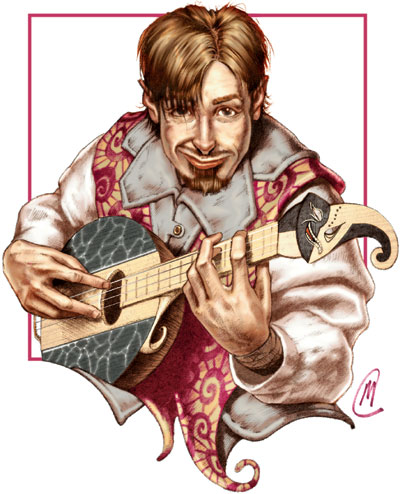
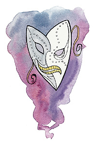

渥利达马拉（Olidammara）

欢笑游荡者
中等神力
圣徽：欢笑面具

居住位面：Ysgard
阵营：混乱中立
神职：游荡者，音乐，狂欢，酒，幽默，诡计
信徒：游荡者，吟游诗人，演员，酒商
牧师阵营：混乱邪恶，混乱善良，混乱中立
领域：混乱，机运，诡术
偏好武器：细剑
游荡者之神渥利达马拉一般以一个棕发，橄榄色皮肤，眼中总是带着一丝欢愉色彩的放荡而潇洒的男人形象出面，当然，他也经常易容。渥利达马拉喜欢美酒，女人和音乐。他个漂泊者，恶作剧高手，以及易容大师。他的神殿很少见，不过，很多人都愿意以他的名义举杯。
教义
渥利达马拉喜欢给任何一个看上去过着规律的生活，每日行着常事的人捣乱。他力劝他的追随者们专心于研究和发展音乐艺术。他也曾教导过人们所谓“生命就是享乐，生活就是恶作剧与被恶作剧”的道理。渥利达马拉信徒们，特别是喜欢骗人和恶搞的魔术师本身，必须感谢别人对自己还开的玩笑，并接受别人的嘲笑。美酒，据渥利达马拉说，那是生命中最大的欢乐源泉之一，而美酒唯一的作用也只是供人喝下去而已。人们应当逃避痛苦与不幸，禁酒令，和严肃的生活态度，它们是毁灭美好生活的罪魁祸首，腐蚀健康灵魂的最大毒药。
神职人员与神殿
渥利达马拉的教会基本上没什么组织，但他的牧师却非常的多。他们通常在城市地区活动，或者会去乡间巡游。渥利达马拉的牧师通常还有个第二职业，比如吟游诗人，酿酒商，或者各类其他的商人。因此，可以说，渥利达马拉的牧师可以在任何地方穿着任何衣服做着任何你能想到的事。
侍奉渥利达马拉的神殿是很少的。但，如同他的追随者们说的，哪里有酒，歌，和笑声，哪里就是渥利达马拉的神殿。大多数渥利达马拉的固定神殿是隐蔽活动的，这是为了参拜神殿的特种职业者着想。大多数的酿酒商也都会在自己的工场里至少安放上一个小小的渥利达马拉的神龛。
渥利达马拉
游荡者20级/吟游诗人10级/牧师10级
中体型外界生物
神格等级：15
生命骰：20d8+140（外界生物）加20d6+140（游荡者）加10d6+70（吟游诗人）加10d6+70（牧师）（840hp）
先攻调整值：+24，总是最先行动（+20敏捷，+4精通先攻，绝对先攻）
速度：60尺
防御等级：84（+20敏捷，+15神格等级，+28天生防御，+11偏转）
攻击加值：+5混乱锐锋追击细剑 +81/+81/+76/+71/+66近战；或者法术 +63近战接触或 +76远程接触
伤害加值：+5混乱锐锋追击细剑 1d6+12/12-20；或者使用法术
占据/威胁范围：5尺*5尺/5尺
特殊攻击：偷袭（+13d6），每日14次驱散不死生物，领域神力，超凡神格能力，类法术能力，临界攻击
特性：神格免疫，伤害减免 50/+4，火元素伤害抗力35，神术自发性施法，理解、交谈及阅读所有语言并直接于任何15里内的生命存在交谈，远程沟通，神祗国度，随意无误传送，随意位面旅行，诗人逸闻知识 +20，每日10次诗人音乐（counbtersong,fascinate,inspire competence,inspire courage,inspire greatness suggestion），反射闪避，趁势攻击，精通反射闪避，心智灵活，使用陷阱，离奇闪避（不能被夹击，对陷阱 +4），SR47，神力光环（1500尺，DC35）
豁免调整值：坚韧 +54，反射 +69，意志 +54
能力值：力量 24，敏捷 50，体质 24，智力 30，感知 24，魅力 33
技能调整值：估价 +45，平衡感 +59，唬骗 +103，手艺（制造乐器） +57，交涉 +48，解除装置 +45，易容 +58，脱逃术 +55，医疗 +26，躲藏 +67，暗语沟通 +48，威吓 +52，知识（奥术） +71，知识（历史） +45，知识（地方） +45，聆听 +68，潜行 +69，开锁 +75，扒窃 +65，专业（草药） +42，专业（酿酒） +68，读唇 +45，探知 +68，搜索 +55，察言观色 +66，辨识法术 +52，侦察 +54，翻滚 +69，使用魔法装置 +78，野外求生 +42，技能检定掷骰自然结果总是取20
专长：警觉，盲斗，格斗反射，闪避，法术增远，专家，法术延时，精通重击（细剑），精通卸除武器，精通先攻，精通绊摔，闪电反射，机动，即时备战，技能专攻（表演），法术渗透，跳跃攻击，高级专家，武器娴熟（细剑），武器专攻（细剑），旋风攻击
神格免疫：属性伤害，属性吸取，酸，冷，即死效果，疾病，瓦解，电，能量吸取，心智影响效果，麻痹，毒，睡眠，震慑，变形，监禁，放逐。
超凡神格能力：改变现实，改变大小，区域神力护盾，天神下凡，创造高级物品，创造物品，神力冲击波，神力加速，神力闪避，神力回忆（旋律），神力游荡者，神力护盾，神力技能专攻（唬骗），神力偷袭，瞬间移动，激情表演（无镇定效果），变形（具体见下），绝对先攻
变形：渥利达马拉可以随时变为某种甲壳动物的形象（例如蜗牛，乌龟，或者甚至是龙龟。当成为这种形态的时候，渥利达马拉可以选择缩进他的甲壳中。如果他这样做了，那他就不再可以做其他动作，并失去AC的敏捷加值，但每小时，他得到一次自由使用其神力护盾能力的机会）
领域神力：施展混乱领域法术时，施法者等级加1；每日15次重掷不满意其结果的掷骰。
类法术能力：渥利达马拉可以相当于施法者等级为25级使用混乱领域类法术能力，以相当于施法者等级为24使用其他类法术能力。类法术能力的基本豁免DC为35+法术等级。Aid,animate objects,break enchantment,change self,chaos hammer,cloak of chaos,confusion,diepel law,entropic shield,false vision,freedom of movemnet,holy aura,invisibility,magic circle against law,miracle,mislead,nondetection,polymorph any object,protection from elements,protection from law,screen,shatter,spell turning,summon monster IX（仅限以混乱领域法术施展）,time stop,word of chaos.
吟游诗人可知法术（3/6/6/5/2；基础DC=21+法术等级）：0-dancing lights,detect magic,ghost sound,mage hand,prestidigitation,read magic;1st-detect secret doors,feather fall,message,ventriloquism;2nd-detect thoughts,magic mouth,minor image,mirror image;3rd-confusion,emotion,illusory script,wind wall;4th-dominate person,hallucinatory terrain
牧师每日神术：6/7/7/6/5/4；基础DC=17+法术等级
财产：渥利达马拉拥有一把名为“灵击”的 +5混乱锐锋追击细剑。此剑制造施法者等级为20，重3磅。
其他神格能力
作为一个中等神力，渥利达马拉在任何掷骰中自动取20，渥利达马拉在攻击检定和豁免检定掷骰自然值出1时，并不视作必然失败，而是视作普通失败。他是不朽的。
感知：渥利达马拉可以看见，听见，触摸和嗅到15哩的距离。作为一个标准动作，他能够感知到任何动物，他的信徒，圣迹，与他有关的物体和任何他的名字在一个小时内被说出的地点周围15哩内的一切。他能够立即将他的感知延伸到10个地方。他立即能够在2个地方阻止神格等级等于或者小于他的神的感知力量，时间最长可达15个小时。
神职感知：渥利达马拉可以在事情的发生前15周，发生后15周，或发生时立刻感知到任何与偷窃，玩笑，音乐，诗歌，或者游戏等有关的事情。他同样也能感知到任何与酿酒有关的事情。
自动动作：渥利达马拉能够以一个自由动作使用其手艺（制造乐器），解除装置，知识（奥术），知识（历史），知识（地方），开锁，专业（草药），或专业（酿酒）等技能，只要该项任务的DC在25或者更低。他也能自由动作使用其扒窃技能，但每次依然要做对抗检定。他每轮能够完成10个类似的自由动作。
创造魔法物品：渥利达马拉能够创造任何魔法匕首，飞镖，轻型硬头锤，闷棍，短弓，复合短弓，短剑，木棒，重型硬头锤，钉头锤，木棍，细剑，以及任何种类的十子弓，还有能帮助使用者隐蔽或是易容的魔法物品，比如ring fo invisibility,robes of blending,hat fo disguise，以及魔法武器，比如horn of blasting,pipes of the sewers,lyre of building，只要物品的交易价格不超过200000GP。
化身
渥利达马拉的化身的样子可谓千奇百怪，尽管他本人最喜欢如同他自己的人类形态。他派遣他的化身去和其他的神祗乃至凡人去开……玩笑……
渥利达马拉的化身：如同渥利达马拉的本体，但以下除外：神格等级为7；防御等级68（接触48，措手不及68）；攻击加值 +73/+73/+68/+58近战（1d6+12/16-20/，+5混乱锐锋追击长剑）或法术 +56近战接触或 +69远程接触；特性：伤害减免 42/+4，火元素伤害抗力 27，SR39，神圣光环（700尺，DC27），豁免调整值 坚韧 +26，反射 +36，意志 +26；所有技能调整值减8
超凡神格能力：改变大小，自动超魔（法术瞬发），创造物品，神力加速，神力闪避，神力回忆（旋律），神力护盾，瞬间移动，绝对先攻
类法术能力：施法者等级为17；豁免检定DC为27+法术等级